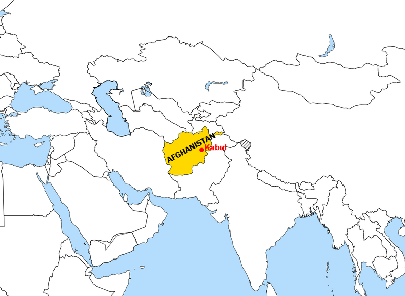
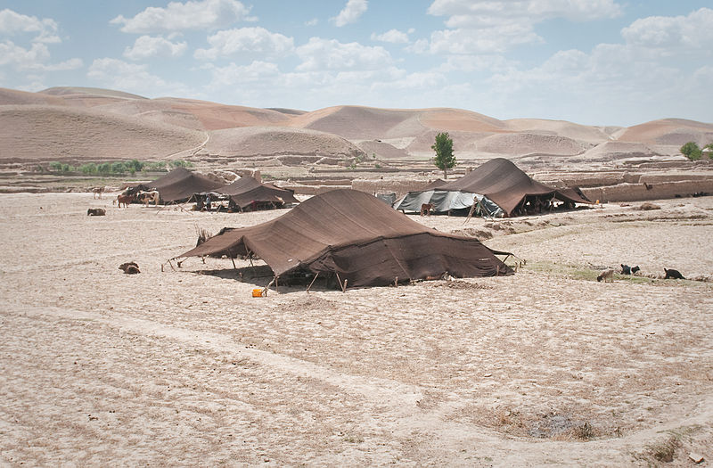
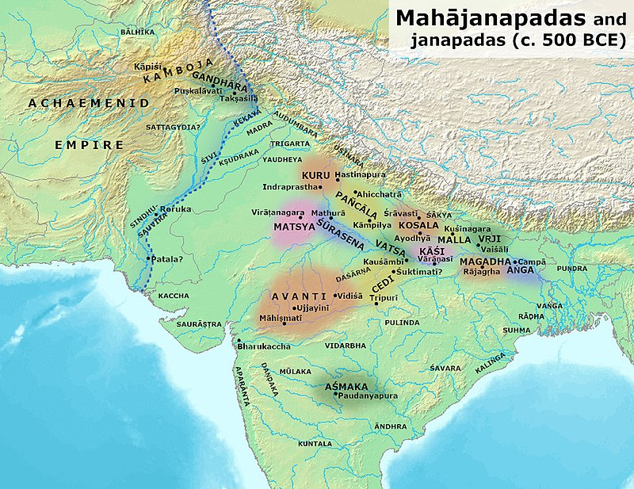

History of Afghanistan

The history of Afghanistan, preceding the establishment of the Emirate of Afghanistan
in 1823 is shared with that of neighbouring Iran,
central Asia and Indian subcontinent.
The Sadozai monarchy ruled the Afghan Durrani Empire, considered the founding state of modern Afghanistan.[1]
Human habitation in Afghanistan dates back to the Middle Paleolithic era, and the country's
strategic location along the historic Silk Road has led it to being described, picturesquely,
as the ‘roundabout of the ancient world’.
[2] The land has historically been home to various peoples and has witnessed numerous military campaigns
including those by the Persians, Alexander the Great, the Maurya Empire, Arab Muslims, the Mongols,
the British, the Soviet Union, and most recently by a US-led coalition.
[3] The various conquests and periods in both the Iranian and Indian cultural spheres[4][5]
made the area a center for Zoroastrianism, Buddhism, Hinduism, and later Islam throughout history.[6]
The Durrani Empire is considered to be the foundational polity of the modern nation-state of Afghanistan,
with Ahmad Shah Durrani being credited as its Father of the Nation.[7][8]
However, Dost Mohammad Khan is generally considered to be the founder of the first modern Afghan
Shah, it was divided into multiple smaller independent kingdoms, including but not limited to Herat
, Kandahar and Kabul.

Afghanistan would be reunited in the 19th century after seven decades of civil war from 1793 to 1863,
with wars of unification led by Dost Mohammad Khan from 1823 to 1863,
where he conquered the independent principalities of Afghanistan under the Emirate of Kabul.
Dost Mohammad died in 1863, days after his last campaign to unite
Afghanistan would be reunited in the 19th century after seven decades of civil war from 1793 to 1863,
with wars of unification led by Dost Mohammad Khan from 1823 to 1863
where he conquered the independent principalities of Afghanistan under the Emirate of Kabul.
Dost Mohammad died in 1863, days after his last campaign to unite Afghanistan
and Afghanistan was consequently thrown back into civil war with fighting amongst his successors.
During this time, Afghanistan became a buffer state in the Great Game between the British Empire
(in British-ruled India) and the Russian Empire. From India, the British attempted to subjugate
Afghanistan but were repelled in the First Anglo-Afghan War. However, the Second Anglo-Afghan
War saw a British victory and the successful establishment of British political influence over Afghanistan.
Following the Third Anglo-Afghan War in 1919, Afghanistan became free of foreign political hegemony,
and emerged as the independent Kingdom of Afghanistan in June 1926 under Amanullah Khan.
This monarchy lasted almost half a century,
until Zahir Shah was overthrown in 1973, following which the Republic of Afghanistan was established.
